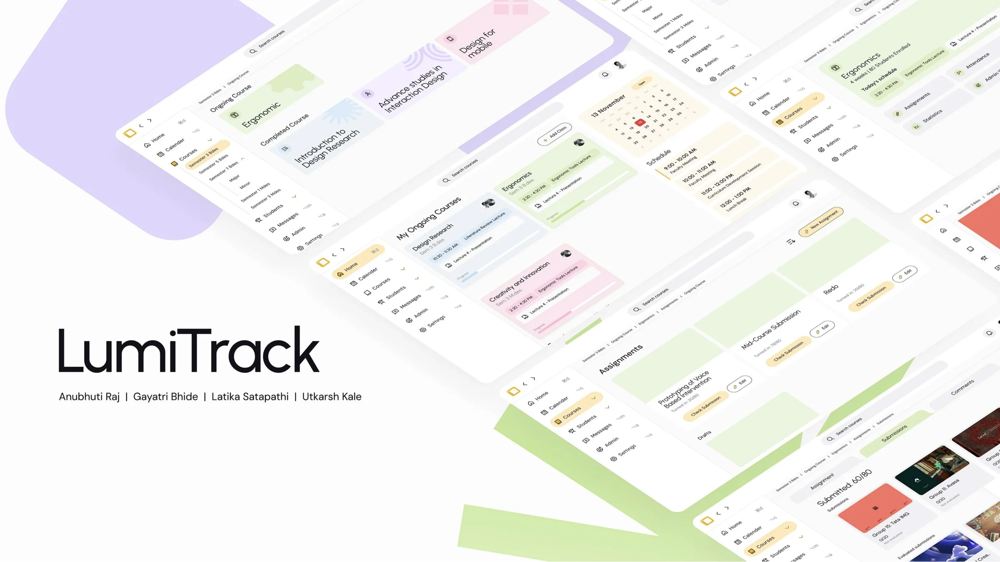
01 · OVERVIEW
LumiTrack
A teaching dashboard that gives design faculty their time back, so mentoring is about the student, not the spreadsheet.
Grading design is subjective, feedback is qualitative and progress isn't a straight line. Yet the faculty at our college were running all of it on tools built for something else. LumiTrack is a learning management system made for design colleges, starting with the people who teach in them.
02 · WHERE IT STARTED
Our college already uses so many platforms. Does any of it help?
Count what one faculty member opens in a week.
- Google Classroomsubmissions
- Excelgrading
- WhatsAppmentoring
- Teamsschedules
- TCS iONattendance
- Outlookadmin mail
Feedback is inconsistent, expectations are unclear, guidance is rarely personal, group work hides individual effort, and faculty are drowning in admin.
Six tools, and still no one place to see how a student is growing.
so we went and asked
03 · HOW WE LISTENED
We talked to the people on both sides of the feedback
SEMI STRUCTURED INTERVIEWS
The same few open questions for everyone, about giving feedback, grading and keeping track of students. Then we followed wherever the conversation went.
SENTENCE COMPLETION
People finished half written sentences in their own words. It brought out feelings that a direct question usually doesn't.
and this is what kept coming up
04 · WHAT THEY TOLD US
Most of what hurt students started on the faculty side
- 100 to 300students per faculty member, with progress tracked from memory.
- 40 to 50submissions a week. By the end, tired eyes write vague feedback.
- 20 timesthe same comment, typed out for every group.
- Weeksbefore marks come back, against criteria students never saw.
- Who did what?Group work hides each person's part, so grading runs on observation.
- Mixed signalsMentors give conflicting instructions, and approvals get reversed or forgotten.
So we chose to design for faculty first. Fix their week, and students get clearer, faster feedback too.
then we followed one through a semester
05 · A SEMESTER THROUGH THEIR EYES
The low points weren't about teaching
We mapped a faculty member's semester from the brief to the jury, using their own words at each stage.
- PRE COURSE
Okay, let me organise this course.
- WHILE TEACHING
Why do I have to repeat the same thing 20 times?
- MIDCOURSE
I don't remember what the student had done before!
- FINAL SUBMISSION
The process isn't shown, this is difficult for me.
- JURY
There is no way to track their progress across courses, sadly.
They were about repeating, remembering and tracking. That's the part a system can take off their hands.
06 · WHAT ALREADY WORKED
Every tool did one thing well
We compared Google Classroom, Microsoft Teams, TCS iON and Excel feature by feature. Instead of starting from zero, we kept what each did best.
See the full comparison
| LumiTrack | Google Classroom | Microsoft Teams | TCS iON | Excel | |
|---|---|---|---|---|---|
| Rubric creation | Simple, standardised | Basic | Hidden in workflow | Complex | No |
| Rubric visible to students | Always | Yes | Buried | Not clearly | No |
| Inline PDF annotation | Built in | Yes | Yes | No | Manual |
| Consistent feedback across faculty | Shared rubric | No | No | No | No |
| Student progress | Flags and visual progress | Limited | Limited | Yes | Manual |
| Attendance | Integrated | No | Yes | Yes, but laggy | Manual |
| Dashboard clarity | One screen | Clean | Overloaded | Very cluttered | None |
| One on one mentoring | Built in chat | Basic comments | Chat | Not smooth |
07 · FROM QUESTIONS TO SKETCHES
A prettier LMS wouldn't fix this
If the problem is inconsistency, overload and nothing being visible, the answer has to change how feedback feels for both sides. We started with what ifs, and sketched each one.
- What if faculty could see progress at a glance?A timeline and progress cards for every student, across subjects.
- What if process mattered as much as output?Students upload their steps, not just the final work.
- What if submission, feedback and review lived in one place?One review space, with each person's part marked.
- What if faculty had a helper?Pending evaluations, submission alerts and a clean calendar, handled.
- What if grading was transparent?Visible criteria, so everyone knows why a score is a score.
Then we mapped where everything lives, so every course, student and deadline has one obvious home.
Faculty information architecture. Hover to zoom.
08 · A WEEK WITH LUMITRACK
Every screen answers something we heard
Or follow one faculty member through her week below.
01 · HOME
Today's classes, the day's schedule and what needs attention, on one screen.
Why? Faculty were piecing their day together from Teams, Excel and WhatsApp.
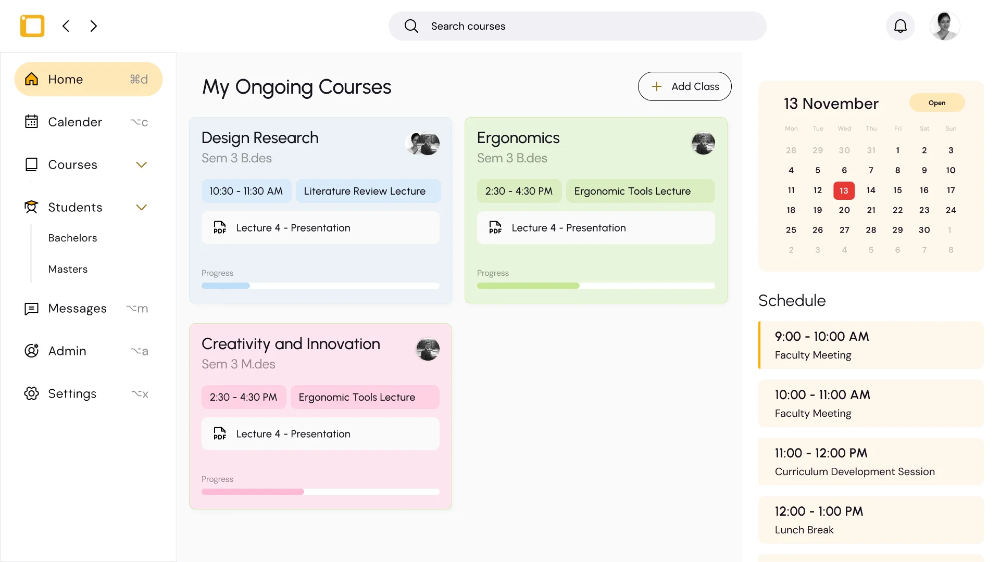
02 · CALENDAR
Lectures, juries and events, colour coded by type. Students see it too.
Why? Students were guessing when faculty were free.
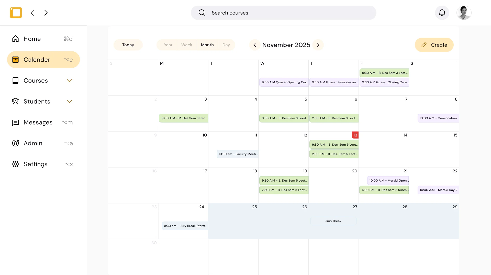
03 · THE ASSIGNMENT
Deliverables and evaluation criteria sit on the assignment itself.
Why? Criteria were unclear, or invisible to students, until the marks came back.
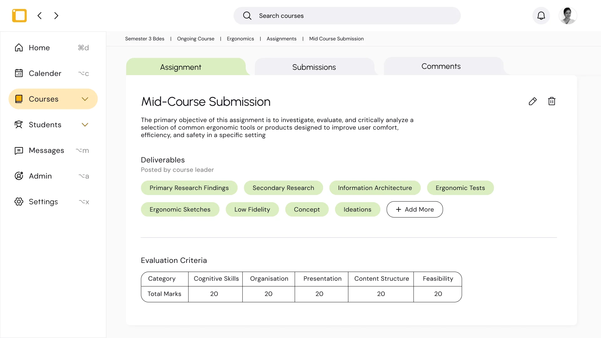
04 · REVIEWING A SUBMISSION
Draw on the work, keep the rubric beside it, and see who in the group did what.
Why? Group work hid each person's part, and faculty had to hold every criterion in their head.
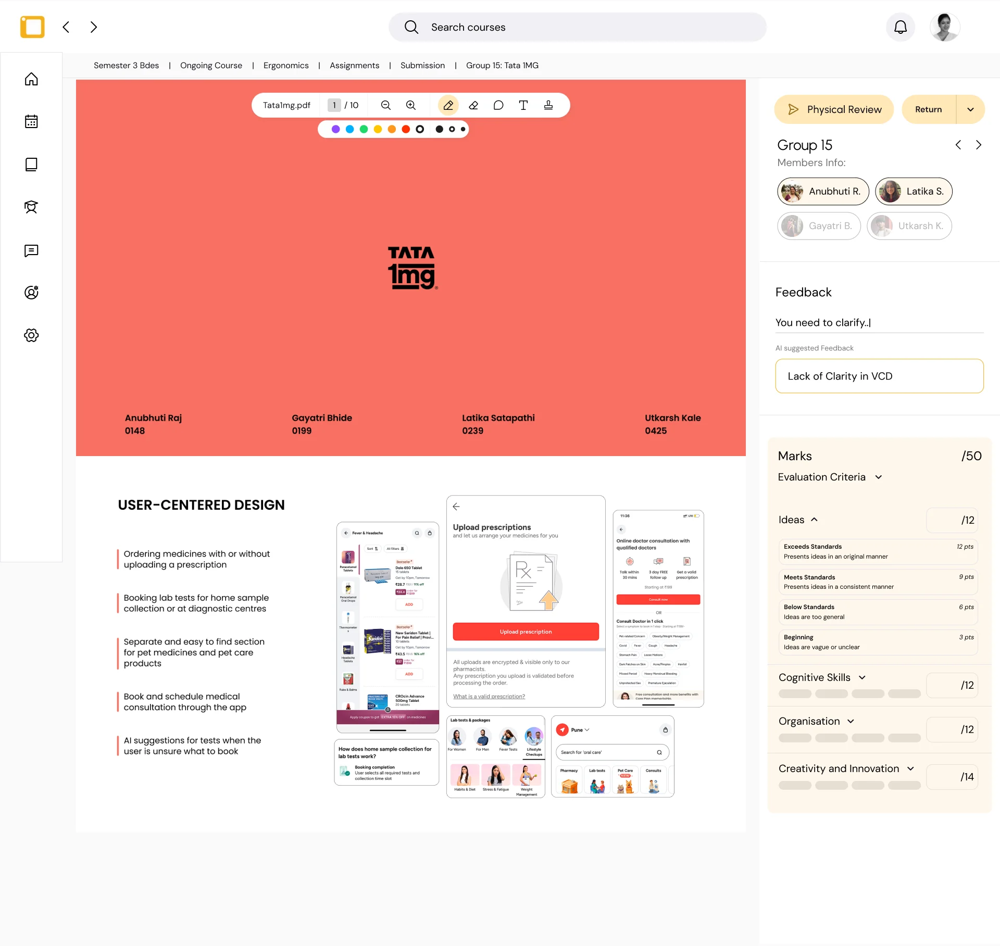
05 · THE COMMENT YOU'D TYPE TWENTY TIMES
LumiTrack notices the same feedback across groups and offers to send it once.
Why? “Why do I have to repeat the same thing 20 times?”
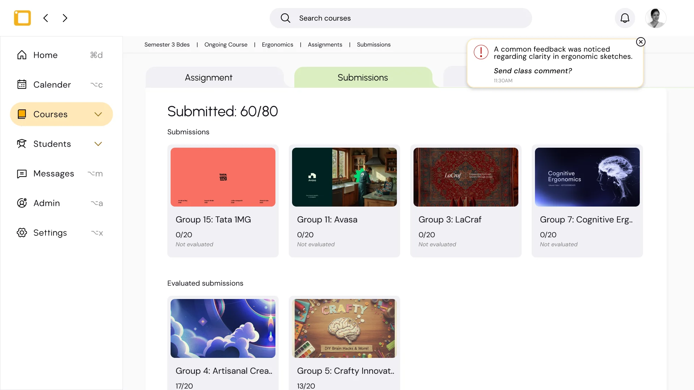
06 · ONE CLASS COMMENT
One message to the whole class instead of twenty private ones, and replies stay in one thread.
Why? Repeated questions were eating the time meant for real mentoring.
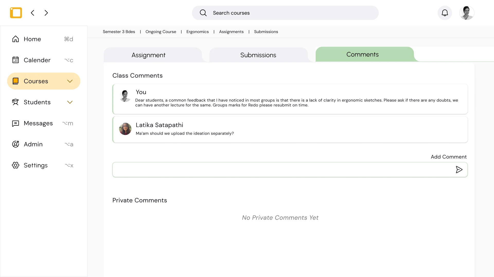
07 · A STUDENT, ACROSS SEMESTERS
Attendance, a progress graph and every project, semester by semester.
Why? With 100 to 300 students, progress lived in memory.
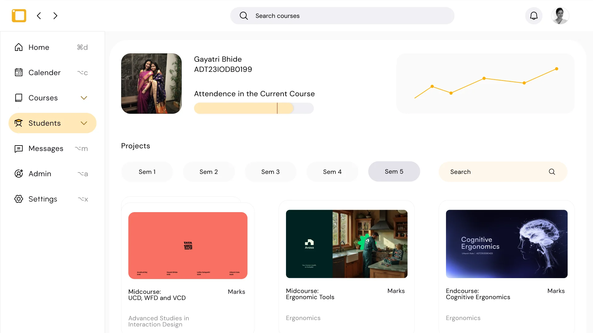
08 · COURSE STATISTICS
Attendance, marks and the questions students keep asking.
Why? A repeated question becomes a topic for the next lecture, not twenty replies.
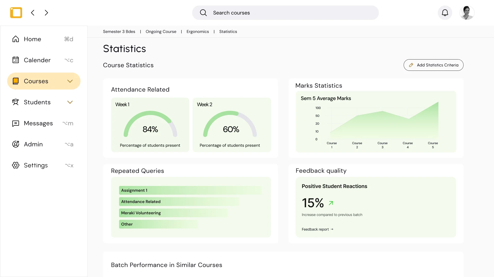
09 · ATTENDANCE
Mark everyone at once, link TCS iON or Sheets, or snap the paper register.
Why? Attendance was a daily manual chore, done twice.
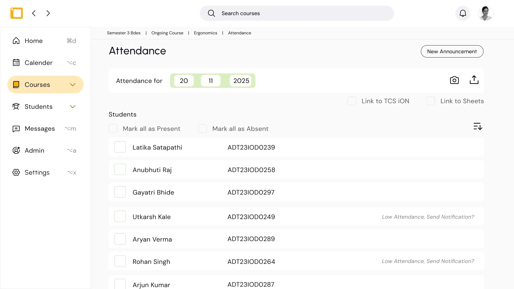
10 · ADMIN
NAAC and monthly reports built from data already in the system.
Why? Admin work was eating into mentoring time.
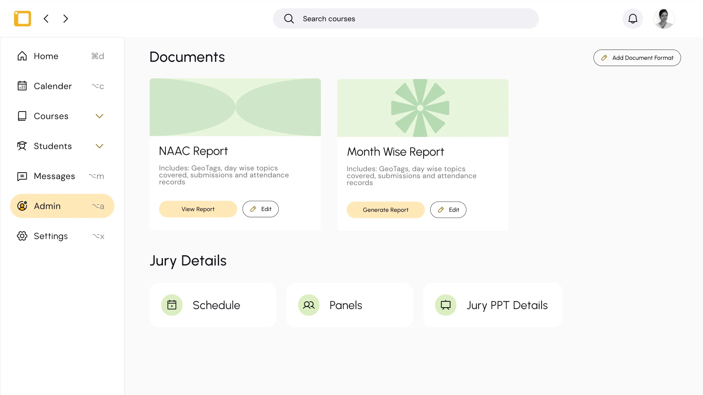
09 · WHAT FACULTY SAID
We put it in front of faculty again
ON SIMPLICITY
“TCS iON is very complex. This is not complex at all, it's very easy to use.”
ON VISIBILITY
“Solves a major Google Classroom problem. Right now, we don't know if people are even opening the classroom unless they submit something.”
ON TIME
“It is at least streamlining everything into one place. This is good, it saves time.”
10 · FUTURE SCOPE
Today a focused LMS. Tomorrow the whole institute.
LumiTrack starts with feedback, evaluation and mentoring. It could grow into an education resource management system for a whole institute, a modern alternative to tools like TCS iON.
- NAAC documentation
- Faculty workload and time
- Payroll, HR and leave
- Event approvals and room booking
- Central student records
- Department insights for curriculum planning
- Analytics for accreditation
We built it with design colleges in mind, and we'd like to take it to other courses next.
धन्यवाद…